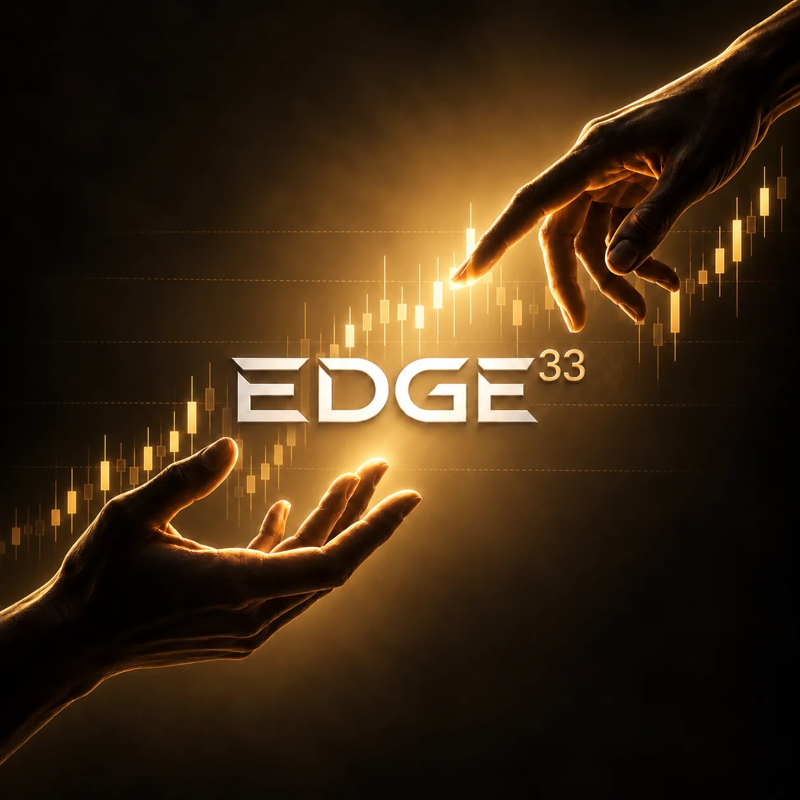

PREPARAR
Lee el contexto
Entiende el mercado, identifica escenarios y define qué tendría que ocurrir antes de actuar.
LA VENTAJA SE CONSTRUYE
Deja de depender de señales. En EDGE33 aprendes fundamentos, una estrategia con estructura y reglas claras, y la gestión necesaria para trabajar hacia la rentabilidad por cuenta propia.

01 / EL SISTEMA
Enseñamos un sistema de trading con reglas definidas para buscar oportunidades, limitar el riesgo y revisar cada decisión. Sus principios se pueden aplicar a distintos mercados; los ejemplos pueden incluir índices como el Dow y el Nasdaq, y también el oro.
Entiende el mercado, identifica escenarios y define qué tendría que ocurrir antes de actuar.
Entradas, salidas e invalidación se establecen de antemano para reducir la improvisación.
Registra operaciones, estudia errores y mejora un proceso que puedas sostener en el tiempo.
02 / LA FORMACIÓN
El objetivo es que entiendas lo que haces, construyas un plan propio y puedas tomar decisiones sin depender de otra persona.
Ver acceso y precioCómo funcionan los mercados, los instrumentos, las órdenes y los costos de operar.
Estructura, escenarios, entradas, salidas y un sistema con reglas que puedas repetir.
Tamaño de posición, pérdidas, disciplina y decisiones bajo presión.
Clases en vivo, revisión de operaciones, diario y comunidad para desarrollar autonomía.
03 / QUIÉN ESTÁ DETRÁS
He operado futuros y superado evaluaciones de fondeo. También he aprendido de las pérdidas. Creé EDGE33 para enseñar un proceso con estructura, reglas y gestión de riesgo que te ayude a convertirte en un trader independiente.
El 33 recuerda una etapa en la que algunos de mis mayores retiros llegaron con aproximadamente 33–35% de aciertos. La lección fue gestionar cada operación y respetar el plan, no perseguir un porcentaje perfecto.
04 / TU ACCESO
Un programa de educación, práctica y acompañamiento para construir habilidades aplicables a distintos mercados.
Precio fundador mientras mantengas tu membresía. Mensualidad sin contrato y garantía de 14 días.
Aplicar por WhatsApp Ya conozco el programa · Pagar ahora05 / PREGUNTAS FRECUENTES
No. Comenzamos con los fundamentos y avanzamos hacia la estrategia, la gestión del riesgo y la práctica. Sí necesitas tiempo para estudiar y ejecutar tu plan.
Enseñamos principios y reglas aplicables a distintos mercados. En clase podemos usar ejemplos de índices y oro, pero no tienes que limitarte a un solo instrumento.
No. Aprenderás un proceso diseñado para buscar consistencia y trabajar hacia la rentabilidad. Los resultados dependen de tu práctica, tus decisiones y el riesgo asumido; operar siempre implica posibilidad de pérdida.
Sí. La membresía es mensual y sin contrato. La cohorte fundadora conserva su precio mientras mantenga activa su membresía.